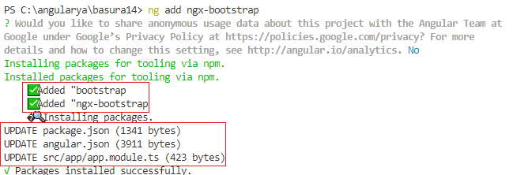

Son dos bibliotecas de componentes de Angular basadas en el Bootstrap original.
Ambas librerías nos ofrecen componentes con la hoja de estilo de Bootstrap pero sin la necesidad de utilizar las librerías JQuery, Popper y la librería Javascript propia de Bootstrap original.
ng-bootstrap y ngx-bootstrap son dos proyectos diferentes de dos equipos de desarrolladores diferentes que intentan lograr más o menos lo mismo que es usar Bootstrap en Angular sin el uso de jQuery y utilizar componentes nativas de Angular.
ngx-bootstrap es compatible con Bootstrap 3, 4 y 5, ng-bootstrap es compatible solo Bootstrap 4 y en beta para Bootstrap 5.
Se sigue requiriendo el archivo de la hoja de estilo bootstrap.css, así que lo primero que debemos hacer referencia al mismo, recordemos que tenemos tres formas de hacerlo, la forma más sencilla es mediante CDN indicando en el archivo index.html:
<link rel="stylesheet" href="https://stackpath.bootstrapcdn.com/bootstrap/4.4.1/css/bootstrap.min.css">
Las otras dos formas que ya vimos son localizandolo en la capeta 'assets' o mediante npm.
En segundo paso instalamos el módulo de ng-bootstrap mediante el administrador de paquetes de Node.JS:
npm install --save @ng-bootstrap/ng-bootstrap
También debemos instalar el módulo:
ng add @angular/localize
Modificamos el archivo 'app.module.ts' agregando el módulo 'NgbModule':
import { BrowserModule } from '@angular/platform-browser';
import { NgModule } from '@angular/core';
import { AppComponent } from './app.component';
import {NgbModule} from '@ng-bootstrap/ng-bootstrap';
@NgModule({
declarations: [
AppComponent
],
imports: [
BrowserModule,
NgbModule
],
providers: [],
bootstrap: [AppComponent]
})
export class AppModule { }
Si visitamos el sitio oficial de ng-bootstrap podremos ver otras formas de instalar algunas componentes y no todas con el objetivo que nuestra aplicación tenga el menor tamaño posible.
Con estos cuatro pasos ya tenemos configurado ng-bootstrap listo para comenzar nuestro proyecto.
Si nos decidimos a utilizar ngx-bootstrap en nuestro proyecto debemos dar los siguientes pasos:
La forma más sencilla es utilizar Angular CLI para instalar todas las dependencias de ngx-bootstrap (de forma idéntica a como instalamos en su momento Angular Material):
ng add ngx-bootstrap
Luego debemos modificar el archivo 'app.module.ts' a medida que requerimos importar componentes, por ejemplo si queremos trabajar con la componente 'alert' debemos implementar el siguiente cambio:
import { BrowserModule } from '@angular/platform-browser';
import { NgModule } from '@angular/core';
import { AppComponent } from './app.component';
import { BrowserAnimationsModule } from '@angular/platform-browser/animations';
import { AlertModule } from 'ngx-bootstrap/alert';
@NgModule({
declarations: [
AppComponent
],
imports: [
AlertModule.forRoot(),
BrowserModule,
BrowserAnimationsModule
],
providers: [],
bootstrap: [AppComponent]
})
export class AppModule { }
Se sigue requiriendo el archivo de la hoja de estilo bootstrap.css, así que lo primero que debemos hacer referencia al mismo, mediante CDN indicando en el archivo index.html:
<link href="https://cdn.jsdelivr.net/npm/bootstrap@5.1.0/dist/css/bootstrap.min.css" rel="stylesheet" crossorigin="anonymous" integrity="sha384-KyZXEAg3QhqLMpG8r+8fhAXLRk2vvoC2f3B09zVXn8CA5QIVfZOJ3BCsw2P0p/We">